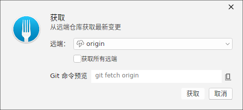
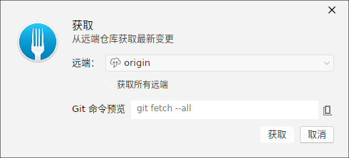
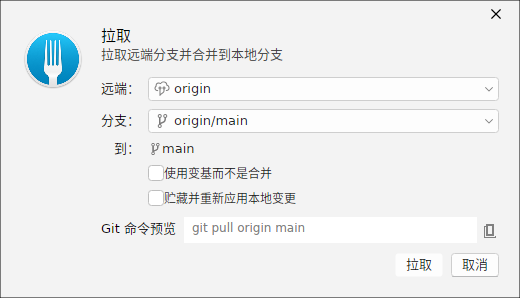
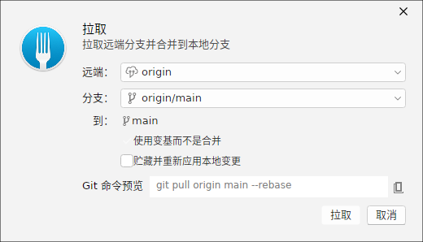
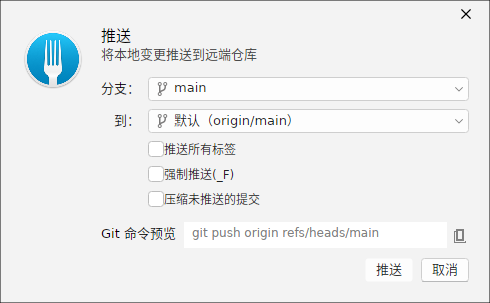
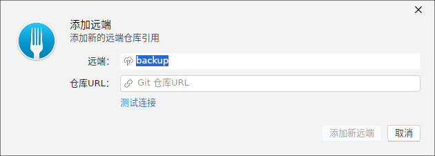
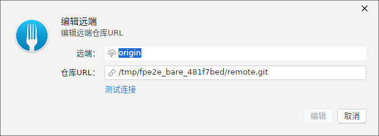
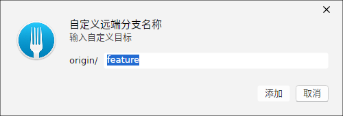
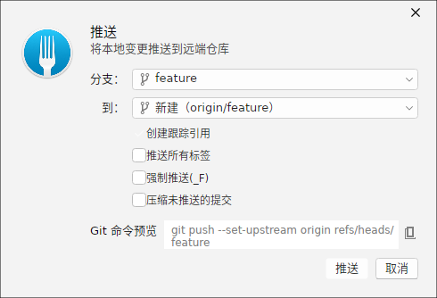
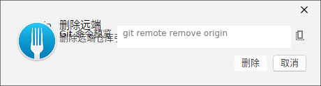

Fetch 拉取
「Fetch」对话框用于从远程获取更新而不合并。默认仅针对当前活动的上游，也可以下拉选择其他远程。对话框底部实时预览将要执行的 git fetch 命令。

Fetch 全部远程
勾选「所有远程」开关后，将一次性从配置的全部远程拉取，并把 FETCH 命令扩展为遍历每个远程的完整形式，适合远程较多时一键同步引用。

Pull 合并拉取
「Pull」对话框把远程更新合并到当前分支。默认采用 git pull 的快速合并语义，也有回退到 Rebase 的选项。命令预览会随选择切换。

Pull 并 Rebase
勾选「以 Rebase 方式拉取」，Pull 将改为 git pull --rebase，把本地提交重新摆放到远程最新提交之上，形成更线性的历史。

Push 推送
「Push」对话框把本地分支推送到远程。对于已建立上游的分支，窗口会预填远端与命令预览；你还可以勾选是否同时推送所有标签。

编辑远程：添加
「编辑远程」对话框以 Add 模式添加新的远程：输入名称与 URL 后，预览 git remote add 命令，用于注册新的远程源。

编辑远程：修改
选择已存在的远程后进入 Edit 模式，自动预填原名称与 URL，修改后预览 git remote set-url 命令，便于更新远程地址而不丢失本地跟踪关系。

自定义 Refspec
「添加自定义 refspec」对话框允许为某个远程补充额外的 fetch 映射规则，以自定义的 refspec 精确控制从远程获取哪些引用，适合特殊的分支/标签同步需求。

推送新分支到远程
当本地分支尚未建立上游时，Push 对话框会以「推送新分支」呈现：选择目标远程后，预览以 --set-upstream 建立跟踪关系的推送命令，让后续 Push/Pull 文件名自动关联。

删除远端
「删除远端」对话框用于删除不再需要的远程仓库：选中某个远程后，会显示将要执行的 git remote remove <name> 命令预览，确认后删除该远程及其所有引用（本地对它的 origin/<branch> 引用一并移除）。删除前请确认本地没有依赖该远程的尚未推送的分支。

变更远程跟踪
「变更远程跟踪」对话框用于调整本地分支与其上游远程分支的关联关系：可为当前分支选择新的上游（预览 git branch --set-upstream-to 命令），或取消跟踪（预览 git branch --unset-upstream）。当分支不再跟踪远程、或需要把跟踪目标切换到另一个远程分支（如接管他人分支）时使用。
origin/<branch>）会自动刷新。若本地与远程分叉，可结合「历史改写」章节的 Rebase/Fetch 选择适合的同步策略。